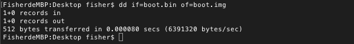
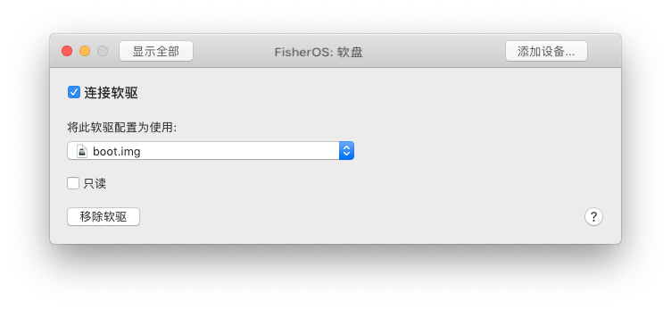
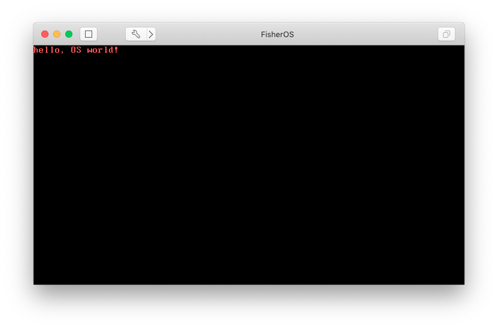
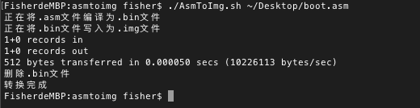

最近在看《自己动手写操作系统》这本书，其中第一章有一段简单的引导代码。书中的指导是将源代码文件.asm编译为二进制文件.bin后写入到软盘中，然后启动运行；又或者是使用FloppyWriter将二进制文件.bin写为镜像文件.img，再放到Virtual PC中运行。由于年代久远，现在的电脑已经没有软盘位，遗留下来的软盘也早被我小时候当玩具玩坏了，而且macOS已经不支持Virtual PC了，FloppyWriter也仅仅是在Windows平台下能够运行。由此看来，书上的运行方法已经全部行不通了
但是.img镜像文件能在VMware Fusion中运行，因此我就想着有没有工具能够将.bin文件转换为.img文件，上网查了一下还真有，工具的名称叫dd，听起来很奇怪，但是这工具却很强大，能够将文件写入到镜像文件中。废话不多说，那就开始试试吧
编译源文件
书中第一章最简单的Hello world代码如下：
1 | org 07c00h ; 告诉编译器程序加载到07c00h处 |
编译一下：
1 | nasm boot.asm -o boot.bin |
这样子我们就得到了二进制格式的引导文件，接下来就是制作镜像了
制作镜像
使用dd制作为镜像，dd本身有很多种参数，我们只需要定义输入和输出即可，其他参数默认就行了
网上的教程思路是先将bin文件写入为img文件，每次写入操作的缓冲大小为512byte，写入到第一块扇区中。然后另外创建一块空的大小为1.44MB（标准软盘容量）的空镜像文件，每次执行写入缓冲的大小也是512byte，总共2880块扇区。最后将空镜像的第2到2880块扇区追加写入到刚刚写入的镜像文件中，这样子就做成了一张标准的软盘。但经过我的测试之后发现，不需要这么标准的操作，只需要把bin文件写成img文件就能在VMware中运行了
1 | dd if=boot.bin of=boot.img |

这样子我们就得到了一个镜像文件，接下来就可以放到虚拟机中运行测试了
启动虚拟机，查看成果
虚拟机的创建就不多说了，自定义的虚拟机不需要很高的配置，甚至硬盘都能去掉。我的虚拟机整体配置如下：
- 客户机操作系统：其他
- 新硬盘：无（先创建后移除）
- 内存：32MB
- 网络连接：无（创建后移除网卡）
- 设备摘要：软盘（创建后移除CD/DVD和声卡，添加软盘）
需要注意一点的就是，我们需要为虚拟机添加软盘设备，然后软盘的镜像选择我们刚刚制作的镜像

启动虚拟机，看到以下界面，大功告成！

注意：在VMware中，书上所说的将org的跳转地址修改为0100h即进入Debug模式，这个方法在VMware中似乎不起作用，因此在后面参考书本源码时，我们需要将org跳转地址固定为07c00h
一键转换脚本
每次从asm文件转换到img文件都会产生一个bin文件，并且输入的命令都颇为麻烦，因此我写了一个小小的脚本AsmToImg.sh，该脚本能帮我们将中间的过程省去，直接输出一个img文件
该脚本的仓库地址在这里
用法：./AsmToImg.sh [-h] source.asm
脚本会将img文件输出到与source.asm同一级目录中，并且自动将bin文件删除

附：书本源码资源
书中的源码其实是不全的，我看到第三章，尝试编译的时候才发现，作者把源码和FloppyWriter都放在随书光盘中了
书的年代久远，光盘早就弄丢了，找这本书的资源花了我好长时间，我把资源就放在我的服务器上吧，下载地址点这里